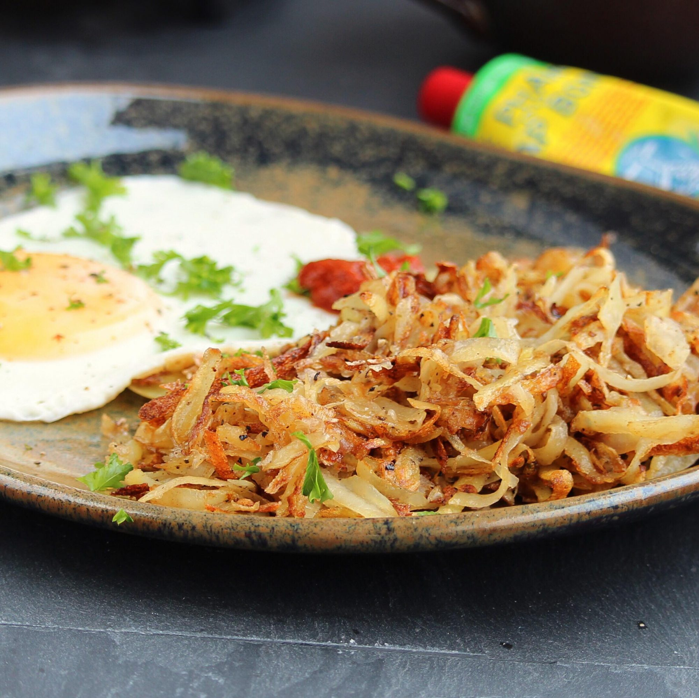

Hash Browns

Description
These classic diner-style hash browns are
crispy on the outside and fluffy
on the inside.
Ingredients
- 2 russet potatoes, peeled
- 3 tablespoons clarified butter
- salt and ground black pepper to taste
- 1 pinch cayenne pepper, or to taste
- 1 pinch paprika, or to taste
Steps
- Shred potatoes into a large bowl filled
with cold water. Stir until water is cloudy,
drain, and cover poataoes again with fresh
cold water. Stir again to dissolve excess
starch. Drain potatoes well, pat dry with
paper towles, and squeeze out any excess
moisture.
- Heat clarified butter in a large non-stick
pan over medium heat. Sprinkle shredded
potatoes into the hot butter and season
with salt, black pepper, cayenne pepper,
and paprika.
- Cook potatoes until a brown forms on the
bottom, about 5 minutes. Continue to cook
and stir until potatoes are browned all
over, about 5 more minutes
.